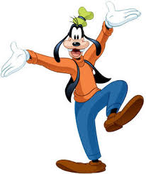
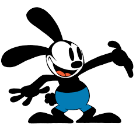

Some Famous Charcters Created By Walt Disney
 Mickey Mouse
Mickey Mouse Donald Duck
Donald Duck -  Goofy
-  Oswald
Walter Elias Disney ( December 5, 1901 – December 15, 1966) was an American animator, film producer, voice actor, and entrepreneur. A pioneer of the American animation industry, he introduced several developments in the production of cartoons. As a film producer, he holds the record for most Academy Awards earned (22) and nominations (59) by an individual. He was presented with two Golden Globe Special Achievement Awards and an Emmy Award, among other honors. Several of his films are included in the National Film Registry by the Library of Congress and have also been named as some of the greatest films ever by the American Film Institute.
Mickey Mouse Donald Duck